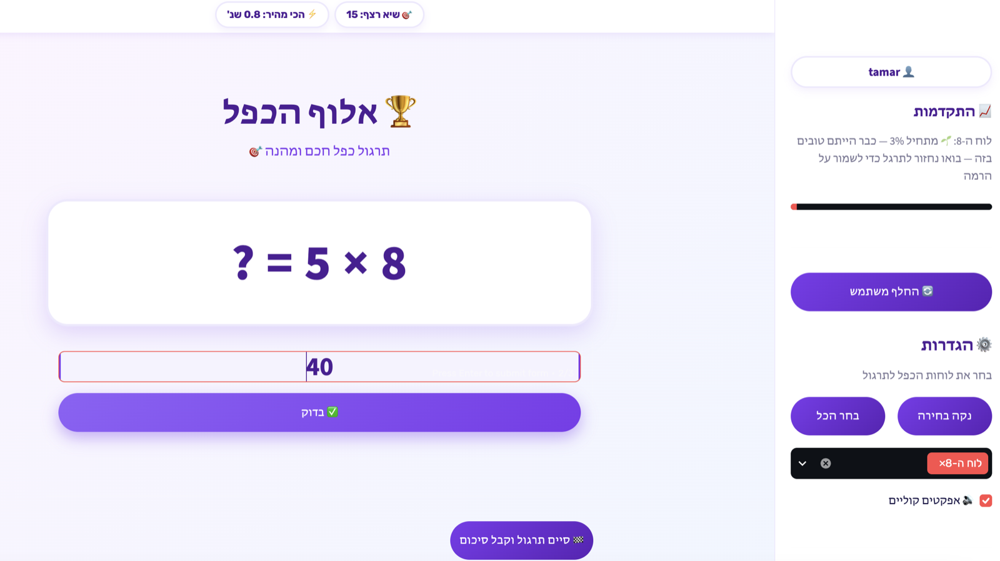

האמונה שלנו
ילדים שנתקעים ב-7 × 8 כבר יודעים את התשובה — הם רק עוד לא בוטחים בעצמם.
ביטחון נשבר בדיוק כמו שהוא נבנה: תשובה אחת בכל פעם. ניחוש שגוי אחד, שנאמר בקול מול הכיתה, מספיק כדי לשכנע ילד שהוא "לא טוב במתמטיקה" — גם כשהוא כבר שולט ברוב לוח הכפל בעל פה. כדי להחזיר את הביטחון הזה לא צריך עוד תרגול מכני. צריך תרגול שפוגש את הילד בדיוק במקום שבו הספק מתעורר, ומאפשר לו בשקט להוכיח לעצמו שוב ושוב שהוא צודק.
השיטה
כל ניסיון נמדד בזמן ומדורג לפי עובדה בודדת, לא לפי כל התרגול — כך שהתרגול יכול להתמקד במספר הבודד שעדיין רועד.
רוב אפליקציות הכרטיסיות מתרגלות את כל לוח הכפל באופן שווה. TimesTable עוקבת אחרי הדיוק וזמן התגובה בנפרד עבור כל אחת מ-100 העובדות מ-1×1 עד 10×10, ומשנה בשקט מה יופיע הלאה: עובדות רעועות מופיעות לעיתים קרובות יותר ובפורמטים קלים יותר, עובדות יציבות עוברות לחזרה מדי פעם בלבד, וגם צורת השאלה עצמה — שינון ישיר, בעיית מילים, גורם חסר — משתנה בהתאם לביצועים בפועל של הילד.
העבירו את העכבר מעל הטבלה כדי לראות איך כל עובדה יכולה להפוך למוקד של היום.
כרגע המודל עוקב אחרי 7 × 8 — 3 תשובות נכונות, אך עדיין 1.8 שניות איטי יותר משאר עובדות השבע. השאלה הבאה: אותה עובדה, כבעיית מילים.
בתוך האפליקציה
ככה זה נראה מהצד של הילד — שאלה, תשובה, וחיזוק מיידי.

מסך התרגול המלא: השאלה הנוכחית, קצב התשובות, והלוח שנבחר לתרגול בסרגל הצד.
כל תשובה נבדקת באותו רגע. תשובה נכונה מקבלת חיזוק חיובי מיידי — לא רק סימן וי, אלא רגע קטן של הצלחה שהילד ירצה לחוות שוב.

המוצר
TimesTable — תרגול כפל אדפטיבי ללוחות הכפל 1–10.
- ×מתאימה את עצמה אוטומטית, עובדה אחר עובדה — בלי הגדרות לקבוע, בלי רמת קושי לנחש.
- ×רצה על המחשב שלכם. נתוני התרגול של הילד לעולם לא יוצאים מהמכשיר.
- ×רמזים ותקצירי מפגש בעברית, אופציונליים, כשילד נתקע — וכשלא, האפליקציה חוזרת להנחיה המובנית שלה.
- ×פרופיל מהיר לכל ילד. שם משתמש בלבד, בלי סיסמה, בלי מה להפסיד.
להתחלה
30 ₪ לחודש. ביטול בכל עת.
הורדה מיידית ל-Windows ול-Mac. נתוני התרגול של הילד נשארים על המחשב שלכם — המנוי רק פותח את הגישה לאפליקציה.